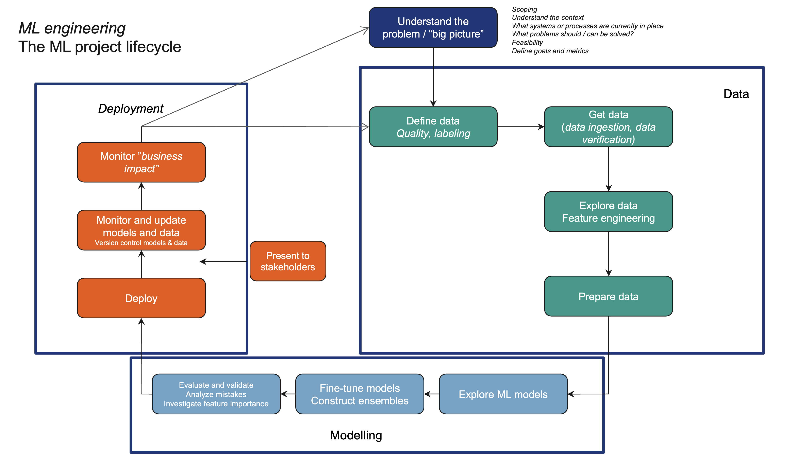

Need some exotic metric you invented yourself, or that is only available in scikit-learn?
Subclass the abstract keras.metrics.Metrics class and implement the following methods:
class MyMetric(keras.metrics.Metric):def__init__(self, ..., **kwargs):super().__init__(**kwargs)# class variablesself.result =self.add_variable(shape=(), initializer='zeros')def update_state(self, y_true, y_pred, sample_weight=None):# this is where the result is calculated# doesn't return anything result = ...self.result.add_assign(result)def result(self):returnself.result
Custom loss functions
Custom loss functions can either subclassing keras.losses.Loss, or they can simply be regular functions, with two inputs (y_true, y_pred) and one output.
Typically we compose complicated models by writing reuseable blocks of layers, as a function
Occasionally, however, we might want to rewrite it as a class.
def conv_block(inputs): x = layers.Rescaling(1.0/255)(inputs) x = layers.Conv2D(128, 3, strides=2)(x) x = layers.BatchNormalization()(x) x = layers.Activation("relu")(x)return x
class ConvBlock(keras.layers.Layer):def__init__(self, **kwargs):super().__init__(**kwargs)self.conv2d = layers.Conv2D(128, 3, strides=2)self.batchnorm = layers.BatchNormalization()def call(self, inputs): x = layers.Rescaling(1.0/255)(inputs) x =self.conv2d(x) x =self.bathnorm(x) out = layers.Activation("relu")(x)return out
The ML project lifecycle

Experiment tracking üßë‚Äçüî¨
During training: Monitor and diagnose
Is my model still improving?
Are gradients stable?
Is the model overfitting?
After training: Compare and select
Which of my models performed best?
…and most importantly: What was the configuration of the best model?
Before next training: Hyperparameter selection
Which new models and hyperparameters should I try?
+ Loads of functionality, including hyperparameter optimisation + Integrates with practically all frameworks - Commercial product (although free for academic use)
How many settings can you tweak in your neural network?
Hyperparameters cannot be optimised via gradient descent
Need to select them through experimentation.
Since one experiment (one training run) can be very expensive, new settings should be chosen carefully.
Hyperparameter optimisation: Grid scan
Option 1: Grid scan
Divide the range of each hyperparameter into fixed steps, and test all combinations.
+ Simple
+ Parallelisable
– The higher the dimensionality, the bigger the distance between grid points. Need a big number of experiments to have good coverage
Hyperparameter optimisation: Random search
Option 2: Random search
Probabilistic approach: Pick hyperparameter values at random
+ Simple
+ Parallelisable
+ Likely to find a better optimum than grid scan in fewer number of tries
– Information about one experiment doesn’t help selecting the next
Should always prefer this over grid search.
Hyperparameter optimisation: Intelligent choices
Option 3: Bayesian optimisation, evolutionary algorithms, and other derivative-free optimisation algorithms
Let the result of one experiment influence the choice of the next one
+ Efficient
+ Several good frameworks exist
– Not parallelisable
Always prefer this, except for the most simple cases
Tools for hyperparameter optimisation
Some options:KerasTuner, for simple integration with Keras:
def model_builder(hp): model = keras.Sequential() model.add(keras.layers.Flatten(input_shape=(28, 28)))# Tune the number of units in the first Dense layer units = hp.Int('units', min_value=32, max_value=512, step=32) model.add(keras.layers.Dense(units=units, activation='relu')) model.add(keras.layers.Dense(10), activation="softmax")# Tune the learning rate for the optimizer -- choose between 0.01, 0.001, or 0.0001 learning_rate = hp.Choice('learning_rate', values=[1e-2, 1e-3, 1e-4]) model.compile( optimizer=keras.optimizers.Adam(learning_rate=learning_rate), loss="categorical_crossentropy", metrics=['accuracy'] )return model